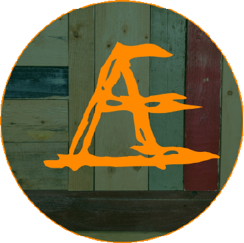

Hvem er Mundhæld
Mundhæld er en specialøls bar startet i 2019 med en beliggenhed på Vestergade 51 i Aarhus, som før i tiden var kendt for dets værtshuse. I dag er Vestergade stadig en gade, hvor op til flere barer og cafeer har lokation.
Mundhæld er en hyggelig bar med 25 haner med forskellige specialøl. I baren er der højt til loftet og man har forsøgt at skabe sammenhæng mellem lokalernes rustikke udtryk og indretningen af baren. Dette er gjort igennem unikke genbrugsfund til baren. Derudover har baren egen gårdhave, som primært har åben i sommerperioden. Bygningen er opført i 1774, hvilket gør den til en af Aarhus ældste.
Størstedelen af Mundhæld’s sortimentet består af øl fra Aarhus Bryghus. Derudover er der enkelte niche øl fra forskellige danske mikrobryggerier. Udover det er der et stort udvalg af non-alkoholiske drikkevarer, biodynamiske rød- og hvidvine, portvine, rom, økologiske chips og en yderst populær hjemmebrygget æblecider. Med de store lokaler er der plads til over 100 siddende gæster. Dette giver også baren mulighed for at leje sig ud til forskellige events lige fra firmafester/julefrokoster til EM-fodbold visning.